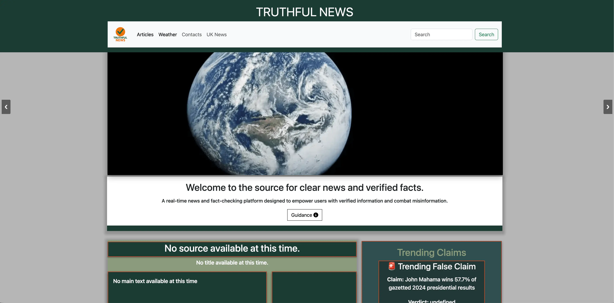

Truthful News
A hackathon-built, real-time news and fact-checking platform designed to combat misinformation and promote media literacy through clear, accessible, verified content.
- Role: Team Hackathon Project — Wireframes & UX Design
- Year: 2026
- Technologies: HTML, CSS, JavaScript, News API, Google Fact Check API, OpenWeather API

Project Links
Project Overview
Truthful News was built by a small team over a hackathon sprint, with the goal of helping people navigate current events confidently — whether they're beginners, non-native speakers, or critical thinkers looking to verify a claim before sharing it. The site combines short, clear news updates with tools to fact-check trending claims, alongside a local weather forecast as a small bonus feature.
- Fact-check cards showing a claim, its verdict, and a source link with a timestamp
- A "Trending Claims" alert box highlighting content flagged as false or misleading
- Search and filtering to find relevant headlines quickly
- Built with WCAG accessibility compliance in mind from the outset
The Problem
- Misinformation spreads quickly online, influencing public opinion and decision-making
- Many news sources aren't accessible to non-native speakers or new internet users
- People need a fast way to check whether a viral claim or headline is actually true
- Existing news sites are rarely designed with accessibility or media literacy as a priority
The Solution
- Short, plain-language news updates instead of dense, jargon-heavy articles
- A dedicated fact-check section pairing each claim with its verdict and source
- Mobile-first, responsive layout tested across phone, tablet, and desktop breakpoints
- Semantic HTML and ARIA labelling throughout to support screen readers and assistive tech
- Wireframes designed with accessibility and clear content hierarchy as the starting point
Key Features
- Fact-Check Cards: Each claim is shown with its verdict, source, and a timestamp for transparency.
- Trending Claims Alerts: Surfaces claims currently being flagged as false or misleading.
- Search & Filtering: Lets users quickly find claims or topics relevant to them.
- Local Weather Forecast: A small added-value feature alongside the news content.
- Accessibility-First Build: WCAG-compliant, with semantic markup and clear, readable typography.
Technologies Used
- HTML5 & CSS3 (Flexbox / Grid, media queries)
- JavaScript (search, filtering, dynamic content rendering)
- News API & GNews API for live headlines
- Google Fact Check Tools API for claim verification
- OpenWeather API for the local forecast feature
- GitHub Pages for deployment
Outcome
The team shipped a working, accessible fact-checking platform within the hackathon timeframe, passing W3C HTML and CSS validation with no errors and meeting WCAG accessibility targets. My contribution focused on the wireframes — establishing layouts that prioritised accessibility and a clear user experience, which guided the rest of the team's development work.